solo-desktop-001-settled.png · struct ok · judge PASS
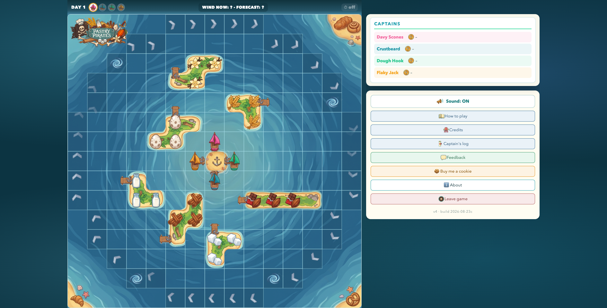
solo-desktop-002-settled.png · struct ok · judge PASS
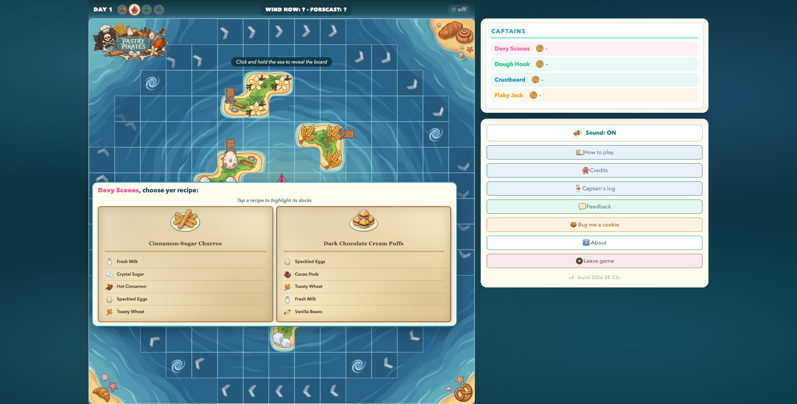
solo-desktop-003-settled.png · struct ok · judge FAIL
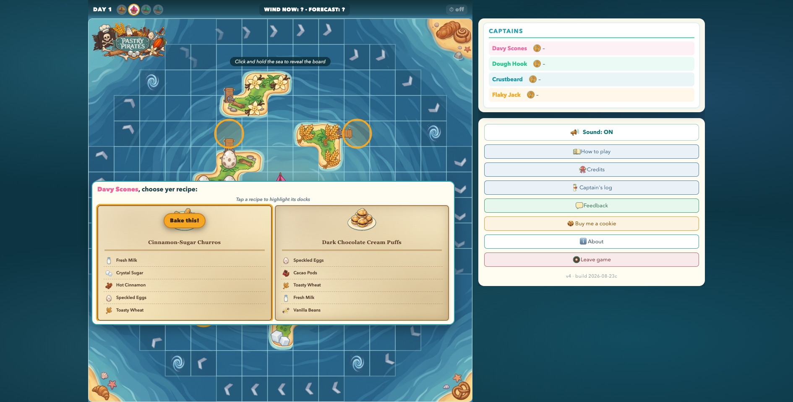
✗ On the selected 'Cinnamon-Sugar Churros' card, the 'Bake this!' button sits directly on top of the recipe's plate icon, hiding almost all of it (only a sliver of a churro pokes out above the button) — the matching plate icon on the unselected card is fully visible, so this reads as a layering bug, not a style choice
solo-desktop-004-settled.png · struct ok · judge PASS
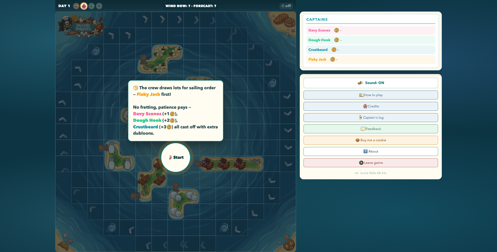
solo-desktop-005-settled.png · struct ok · judge PASS
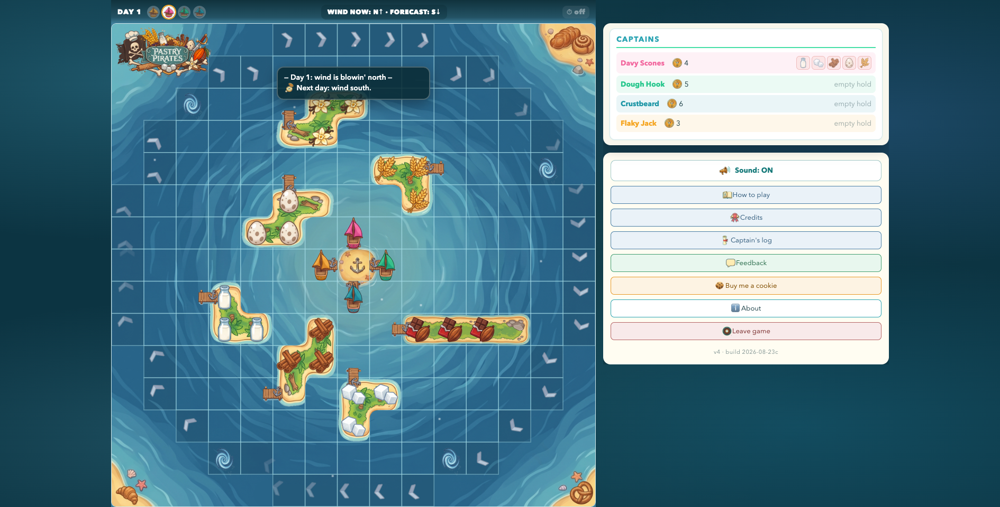
solo-desktop-006-settled.png · struct ok · judge PASS
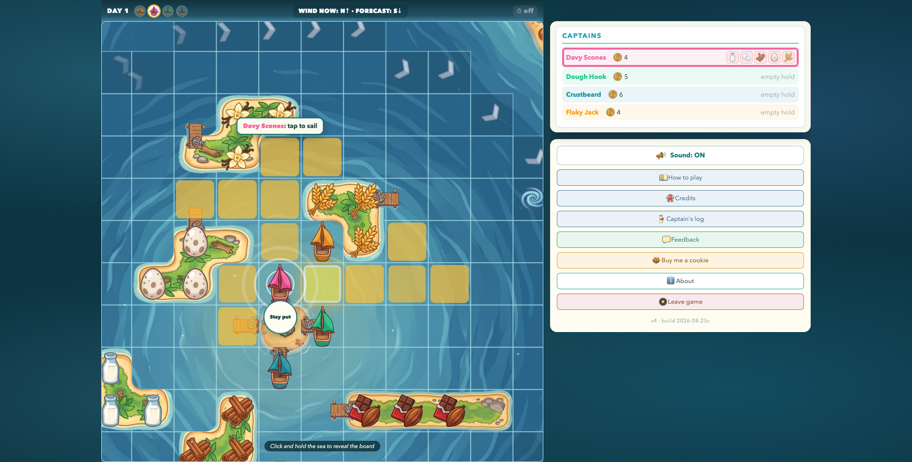
solo-desktop-007-settled.png · struct ok · judge PASS
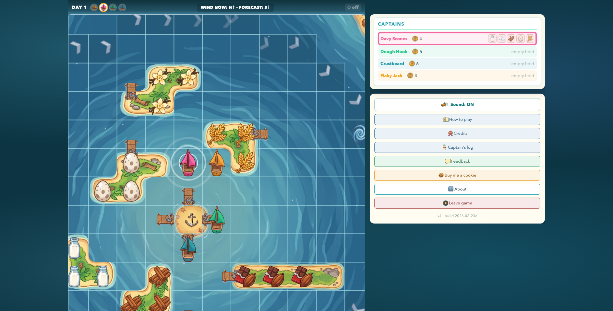
solo-desktop-008-settled.png · struct ok · judge PASS
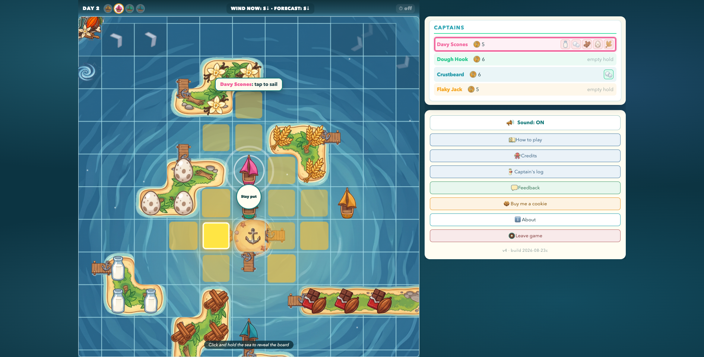
solo-desktop-009-settled.png · struct ok · judge PASS
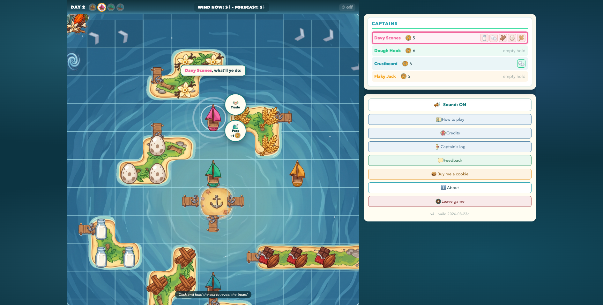
solo-desktop-010-settled.png · struct ok · judge PASS
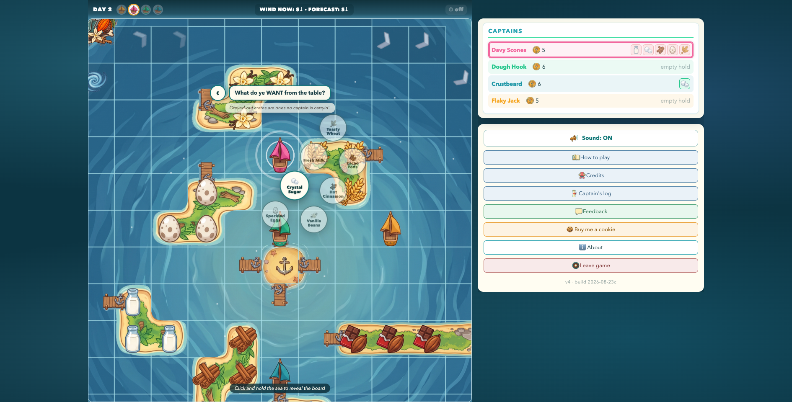
solo-desktop-011-settled.png · struct ok · judge PASS
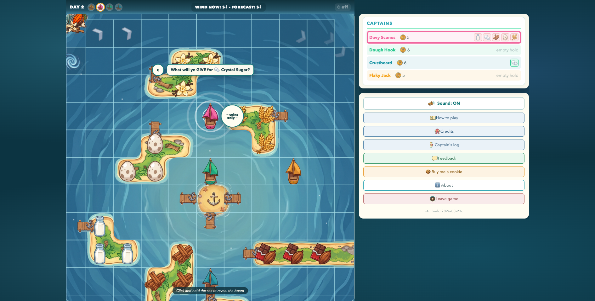
solo-desktop-012-settled.png · struct ok · judge PASS
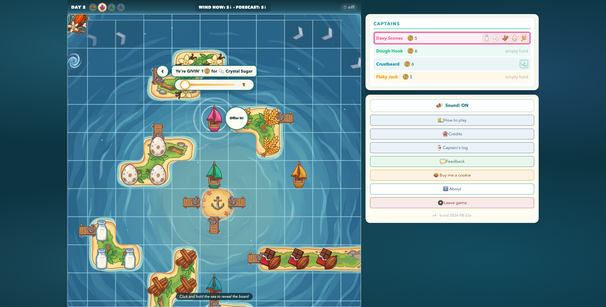
solo-desktop-013-settled.png · struct ok · judge PASS
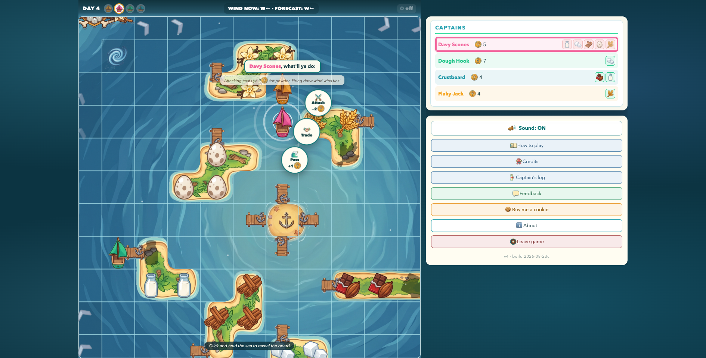
solo-desktop-014-settled.png · struct ok · judge PASS
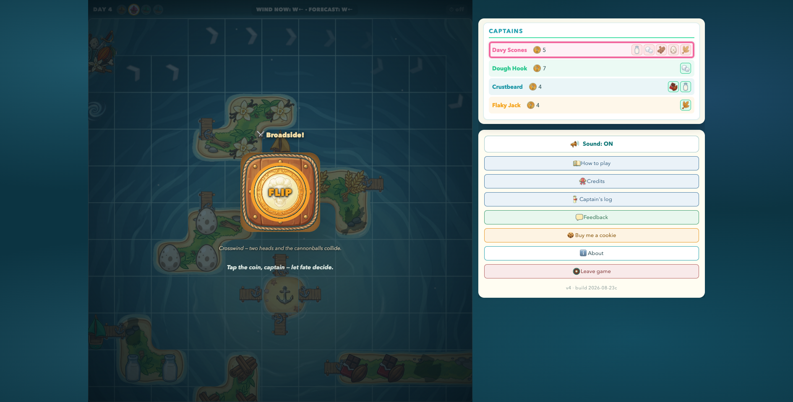
solo-desktop-015-settled.png · struct ok · judge PASS
solo-desktop-016-settled.png · struct ok · judge PASS
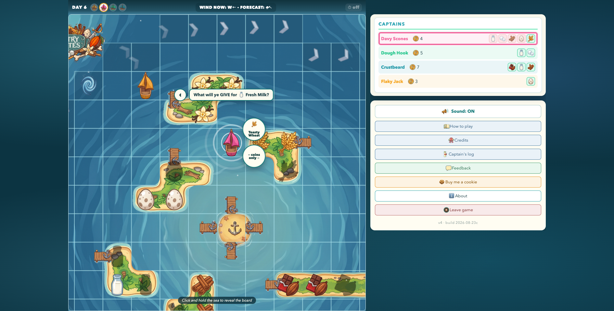
solo-desktop-017-settled.png · struct ok · judge PASS
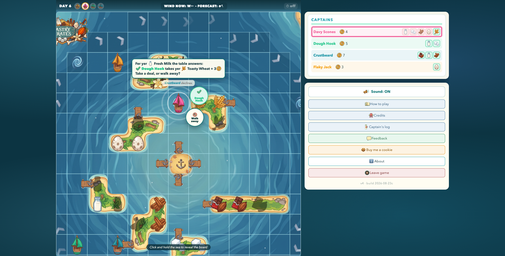
solo-desktop-018-settled.png · struct ok · judge PASS
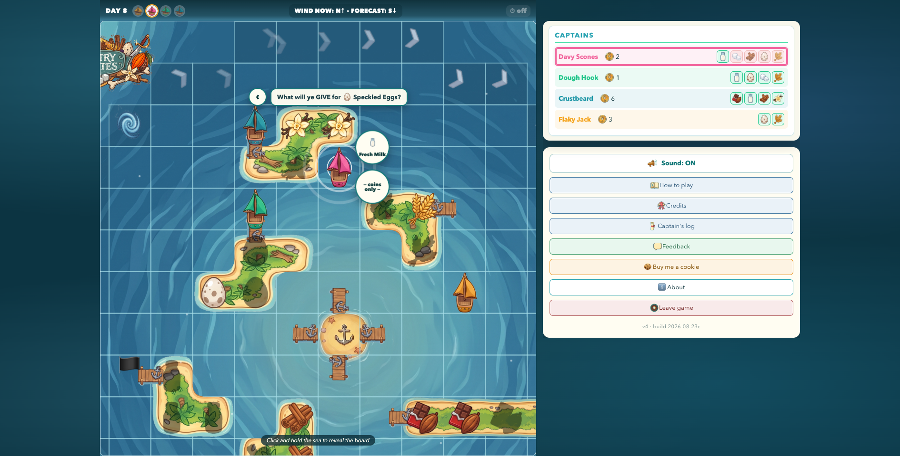
solo-desktop-019-settled.png · struct ok · judge PASS
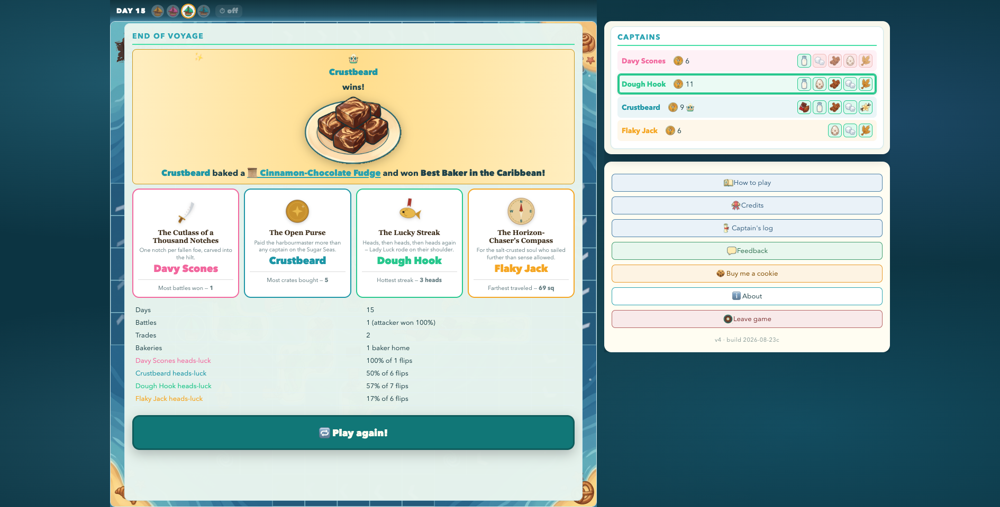
solo-desktop-eov.png · struct ok · judge PASS